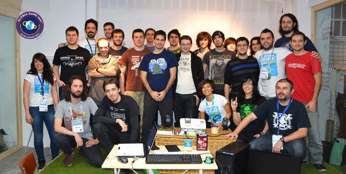

Global Game Jam 2014
The Global Game Jam in Donostia concluded last night (Jan 26th). It was an awesome event. We had 25 participants, both amateurs to professionals, and a total of 9 games were born over the weekend on our location! You can check them all out on the Global Game Jame website.
 Donostia GGJ2014 Jammers and Organizers
Here at Santa Clara Games, we love to make games, but we wondered if we would have have enough time to develop one while organizing this event. Early Saturday morning, close to 1.30am, I saw Iñaki drafting up some concepts on his notebook, and I said, "Hey buddy, things seem to be quiet, and people are very focused on their jobs. Shall we design something around the GGJ theme?", and he said "YES! In fact I'm playing with some ideas right now".
After a short brainstorm we created "Alone in the Forest", an old-school exploration game. The game’s mechanics deal with the player’s concepts of videogames and explores how different kinds of players, seeing the same things, interpret them in their own way. The player’s goal is to find the chest full of gold hidden inside an ancient castle. We used PuzzleScript to develop our ideas. This is a fantastic tool for quick prototyping!
 Alone in The Forest in action
Alone in The Forest in action
You can grab the game at the Global Game Jam 2014 site, or feel free to use the "Fork" on GitHub!
On sunday at 9:00am, we had finished uploading the game to the GGJ servers and had completed all the game's sheet information. Then, I realized that there were still 10 hours left until the event closed! If I wanted to keep myself awake until then, I had to start on something ASAP. I asked myself if I would be able to create a simple version of Portal game using Puzzlescript. With a few concept proofs that I made in 10 minutes, I decided to chase down the team and convinced them to help me make another new game using Portal's mechanics. It sounded crazy! But they loved the idea of developing a second new game in such short period of time!
The result was "Simple Portal - Take your Cake". It's a puzzle-based game in which the player must take the Cake using portal's mechanics.
 Simple Portal - Take the Cake in action!
Simple Portal - Take the Cake in action!
You can play the game here or visit the Global Game Jam 2014 website to see all the details.
That's all folks! We hope you enjoy the games, and we're looking forward to organizing the next Donostia Global Game Jam 2015!